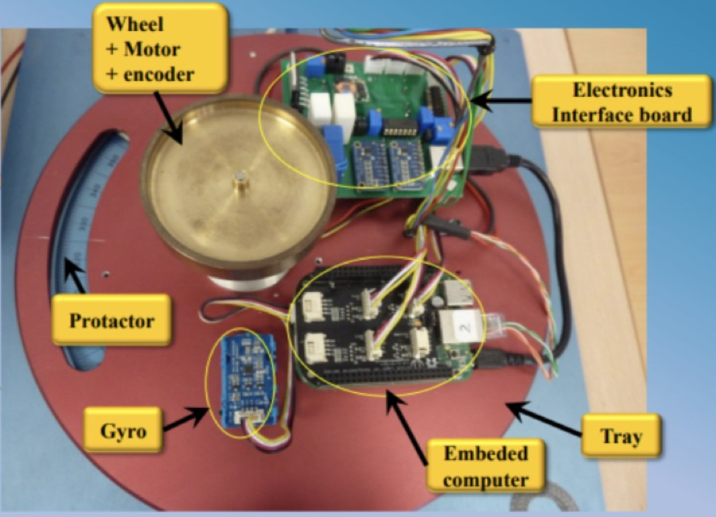
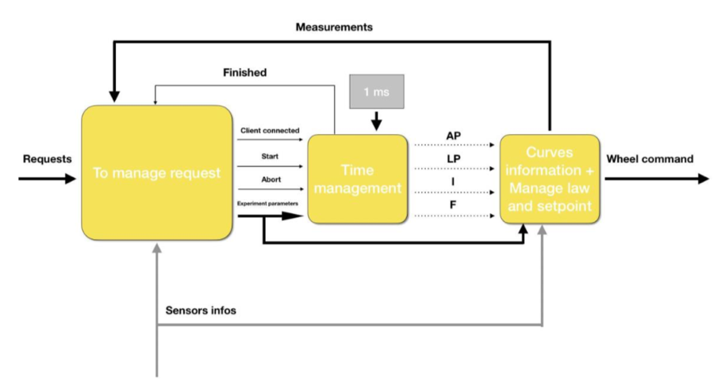
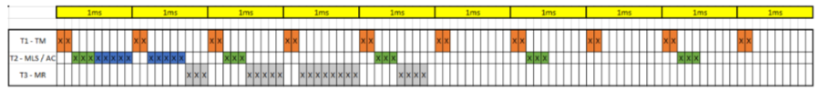
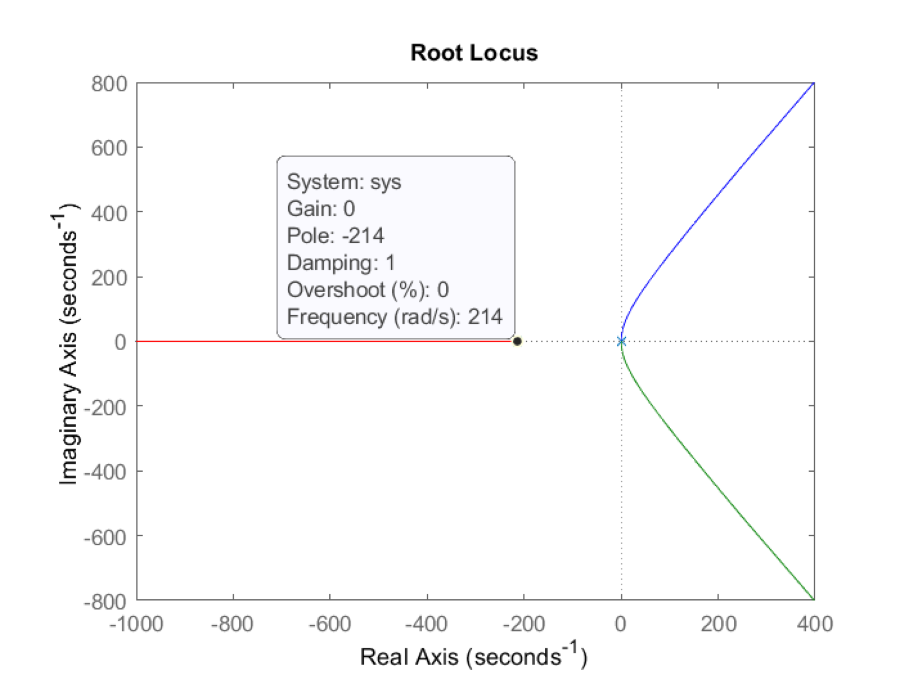
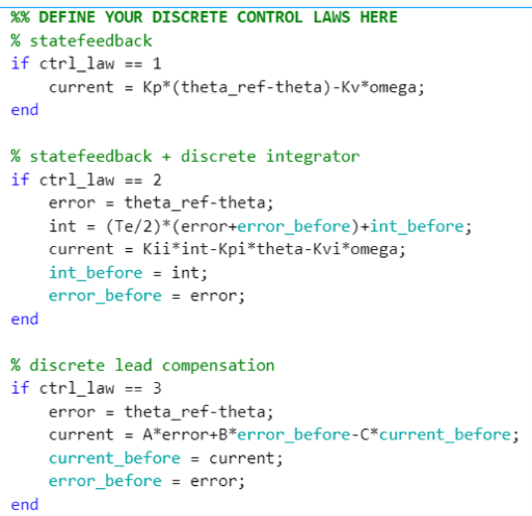
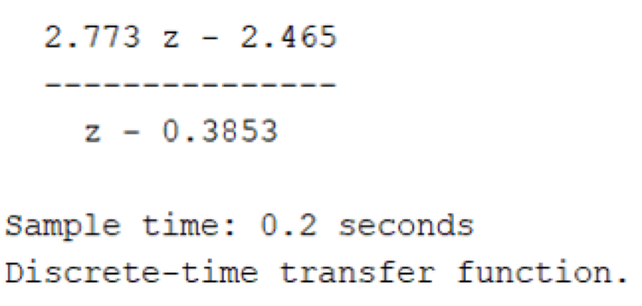

Coursework · ISAE-SUPAERO
Real-time control of a satellite reaction wheel

The setup
A tray free to rotate about one axis, driven by a reaction wheel — the same momentum-exchange principle a satellite uses. Six components: the wheel, motor, encoder, electronics interface board, embedded computer and a user interface. Platform displacement is measured with a protractor and a gyrometer.
| Parameter | Value |
|---|---|
| Platform inertia \(J_p\) | 0.00124 kg·m² |
| Wheel inertia \(J_r\) | \(J_p / 100\) |
| Viscous friction | 1–2 mN·m |
| Coulomb friction | 2.5 mN·m |
| Platform range | \(-\pi\) to \(+\pi\) rad |
Part 1 — The real-time system
Before any control law, the software has to be built as a real-time system: requirements, specification, then design, following the system life cycle. The machine was written in C, developed in NetBeans.
The part that distinguishes real-time work from ordinary programming is the schedule. Tasks have deadlines, and the schedule has to allocate the available computational resources so every task meets its own — a control loop that is correct but late is simply wrong.


Part 2 — The controller
With voltage \(u\) as input and platform angle \(\theta\) as output, the full model has four poles, split between electrical and mechanical dynamics. It is open-loop unstable — three poles at the origin from the mechanical side.


The root locus earns its place here: it shows the electrical pole is much faster than the mechanical ones, so the electrical dynamics can be removed and the measurement feedback that served them dropped with it. Design proceeds on the simplified model — but subject to a hard constraint from the hardware, not the mathematics:
\[ -0.66\ \text{A} < I_{ref} < 0.66\ \text{A} \]exceed it and the command saturates. Several structures were synthesised — PD by modal control, PID, and a phase-lead compensator. For the PD, placing the closed loop as a second-order system with chosen \(\omega\) and damping \(\delta\) exposes the real trade-off: raising \(\omega\) makes the system faster and improves disturbance rejection, but raises the initial current draw, and for some values it exceeds the 0.66 A limit. Raising \(\delta\) cuts overshoot at the cost of speed.
Discretisation

A controller designed in continuous time does not arrive on the embedded computer intact. The discretisation analysis is where the sampling period stops being a free parameter and becomes a design constraint tied back to the task schedule from part one.
Why it was worth doing
Most control coursework stops at the simulation. This one continues through scheduling, C implementation, discretisation and experimental validation on hardware that has real friction, a real current limit and a real deadline — the three things that usually break a controller that looked fine in Simulink.